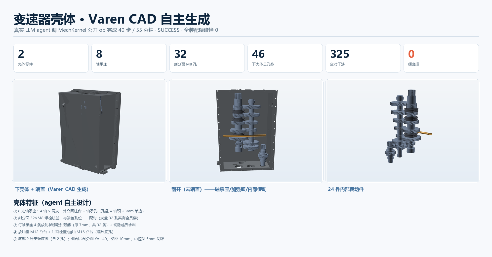

先算清楚
计算传动比、中心距、轴径等设计参数；需求有歧义时先向你提问。
调研 · 计算 · 澄清Varen CAD 是面向机械设计的 AI CAD 建模工具。它会先计算、提问、列出 BOM 让你确认，再逐件创建真实的参数化 CAD 几何，最后导出装配 STEP。几何或碰撞检查不过关，就不会把结果说成已成功交付。
Windows 10/11 · 安装包约 180 MiB · 概念设计与快速原型，需人工工程审核

AI 负责理解意图和安排工作，CAD 内核负责生成、测量和验证几何。关键计划由你确认。
计算传动比、中心距、轴径等设计参数；需求有歧义时先向你提问。
调研 · 计算 · 澄清AI 提出 BOM、零件参数和建模步骤。你批准之后，才开始生成几何。
BOM · 参数 · 审批基于 OpenCascade 内核创建可编辑的参数化 B-Rep 零件，不是渲染图或三角网格。
参数化特征 · 可重放检查实体、特征契约和装配干涉；检查失败时阻止交付，并留下可复查记录。
STEP · 干涉报告 · 证据把“模型说做完了”与“几何确实通过检查”分开。每一步都能查看，失败不会被包装成成功。
参数化 B-Rep、特征历史、零件 STEP 与装配 STEP，可在其他 CAD 软件中检查。
查看计算、提问、BOM、工具调用和验证结果；不让计划悄悄变成几何。
单实体、特征契约、参数重放和装配干涉检查构成交付门槛。
项目文件保存在本机。若使用远程模型服务，提示词和上下文仍会发送给该服务商。

以下为真实任务输出。单个案例不代表所有任务都能成功；失败同样会被记录和复现。

证据渲染只突出真实特征边，减少网格三角化造成的视觉噪声。图像用于检查与沟通；几何本身仍以 CAD 内核中的 B-Rep 数据为准。

当前为 Windows 封闭 Beta。明确边界，避免把原型能力误当成生产保证。
production_ready 始终为 false；制造前必须由工程师复核设计与尺寸。
适合概念设计和快速原型，不承诺覆盖完整的专业 CAD 工作流。
没有完整 2D 工程图流程，也没有通用装配配合 / 运动求解器。
下载 v0.22.1-beta 安装包；请先核对 Release 附带的 SHA256。Beta 仅限 Windows，模型服务需自行配置。